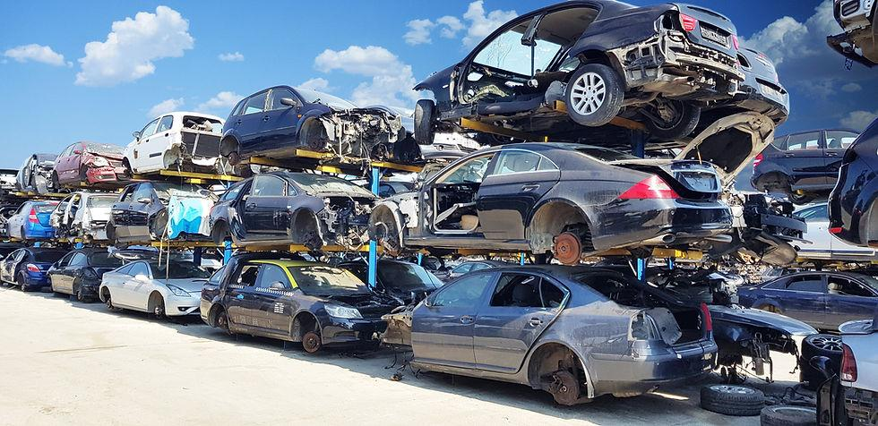

中古車・過走行車
年式が古い車や走行距離の多い車についてもご相談いただけます。

01 中古車買取
古くなった車、走行距離の多い車、事故車、動かない車。 日本では「廃車しかない」と言われた車でも、海外で需要がある場合があります。 EXPORT ZONEでは、車両の状態を確認し、買取についてご案内します。
車両の状態や年式などを確認し、対応可能かご案内します。
年式が古い車や走行距離の多い車についてもご相談いただけます。
事故による損傷や故障がある車も、状態を確認してご案内します。
動かない車や長期間保管している車についてもご相談ください。
車両の情報がすべてそろっていなくても、まずは分かる範囲でお知らせください。
電話・LINE・メールで車両の概要をお知らせください。
メーカー、車種、年式、走行距離、写真などを確認します。
車両の状態や所在地などを確認し、対応可否をご案内します。
双方が条件に合意した場合、必要な手続きを進めます。
車を手放すとき、手続きの方法によっては税金や保険料の一部が戻ります。普通車と軽自動車でしくみが違うので、手放す時期を決める前に確認しておくと安心です。
| 項目 | 普通車 | 軽自動車 |
|---|---|---|
| 自動車税・軽自動車税（種別割） | 抹消登録した月の翌月分から月割で還付 | 月割の還付なし。4月1日時点の所有者に1年分かかる |
| 自動車重量税 | 解体して永久抹消し、車検が1か月以上残っていれば還付を申請できる | 解体届出のときに、車検が1か月以上残っていれば還付を申請できる |
| 重量税の対象外 | 輸出のための抹消、車検の残りが1か月未満 | 同じ |
| 自賠責保険 | 抹消後に保険会社で解約すると、残りの期間に応じて戻る場合がある | 同じ |
4月1日をまたぐと、その年度の自動車税・軽自動車税の納税通知が届きます。普通車は抹消後に月割で戻りますが、軽自動車は戻りません。手放す予定が決まったら、早めにご相談ください。
| 書類 | 普通車 | 軽自動車 |
|---|---|---|
| 車検証 | 必要 | 必要 |
| 印鑑証明書 | 必要（発行から3か月以内） | 不要 |
| 委任状・譲渡証明書 | 実印を押したもの | 認印で可 |
| ナンバープレート | 前後2枚 | 前後2枚 |
| リサイクル券 | あれば用意 | あれば用意 |
車検証の住所や氏名が今と違う場合は、つながりを確認できる住民票や戸籍の附票などが必要です。
書類の書き方は当社がご案内します。書類がすべてそろっていなくても、まずは車検証の写真を送っていただければ、何が必要かをお伝えします。
ナンバーを管轄する運輸支局・自動車検査登録事務所で再交付を受けられます。まずは分かる範囲でご相談ください。
各サービスの詳細はこちらからご覧いただけます。
はい。車両の状態や保管場所などを確認し、対応可能かご案内します。
ご相談いただけます。車種・年式・走行距離・車両の状態をお知らせください。
LINEなどで車両写真をお送りいただけます。写真や車両情報を確認し、次の手順をご案内します。
車両情報や状態などを確認したうえでご案内します。対応可否や条件は車両ごとに異なります。
解体して永久抹消する場合、車検が1か月以上残っていれば自動車重量税の還付を申請できます。普通車は自動車税（種別割）も翌月分から月割で戻ります。輸出のための抹消では重量税は戻らないため、手続きの方法は事前にご説明します。
はい。軽自動車税は4月1日時点の所有者に1年分かかり、月割の還付がありません。3月中に手続きを終えると、次の年度の軽自動車税はかかりません。
車両情報が分かる範囲で、お知らせください。
他社に売る前に、一度だけご相談ください。
「0円」「処分費がかかる」と言われた車・トラック・重機も、海外輸出ルートがあるから値段がつくことがあります。比べてから決めて大丈夫です。
▶ 写真で無料査定する